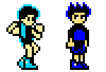

| . |
Credits, Acknowledgments, and Other Stuff That Ain't Mine
 This site and its comics were created by me, Dan Miller. Yay me. The comic viewer was partially inspired by my brother Dave, who figured out a couple of HTML tricks to help make it possible. He also made that little sword guy that's appeared in the comic occasionally. This site and its comics were created by me, Dan Miller. Yay me. The comic viewer was partially inspired by my brother Dave, who figured out a couple of HTML tricks to help make it possible. He also made that little sword guy that's appeared in the comic occasionally.
Now to list all the "cameos." Basically, here's my catalogue of all the graphics NOT created by me. They're included mostly for the sake of humor, or in-jokes in the background. The other 99% of the graphics you see in the strip and all of the story's characters are my own creation and property. That said, after 300+ comics, the video game and pop culture references have piled up a bit.
 Comic 47 has a waterfall backdrop swiped from the Bubbleman Stage of Megaman 2 by Capcom. Pretty. Comic 47 has a waterfall backdrop swiped from the Bubbleman Stage of Megaman 2 by Capcom. Pretty.
  In Comics 58-61, Radd and Bogey order "food" from Itty Bitty, and get Mario power-ups, specifically a Starman from SMB1 and a Mushroom from SMB2 (USA). Everything served by I.B. is "imported" from games. In Comics 58-61, Radd and Bogey order "food" from Itty Bitty, and get Mario power-ups, specifically a Starman from SMB1 and a Mushroom from SMB2 (USA). Everything served by I.B. is "imported" from games.
 Comic 71 has a background starring a shopkeeper from Milon's Secret Castle, the TAT guy from RPG World, and a slightly altered Marin from Link's Awakening. Why she's altered? Um, I don't really have a reason, other than doodling. Comic 71 has a background starring a shopkeeper from Milon's Secret Castle, the TAT guy from RPG World, and a slightly altered Marin from Link's Awakening. Why she's altered? Um, I don't really have a reason, other than doodling.
 In Comic 85 Radd orders a "strong one" and gets a Megaman power-up. Me is clever. In Comic 85 Radd orders a "strong one" and gets a Megaman power-up. Me is clever.
  Comic 126 & 127 feature a SMB1 Goomba and Crono from Squaresoft's Chrono Trigger. Comic 126 & 127 feature a SMB1 Goomba and Crono from Squaresoft's Chrono Trigger.
 Bunny & Chick Playland (Comics starting about 130) sometimes shows a mountainous background, which is an altered version of a backdrop from Blaster Master. Bunny & Chick Playland (Comics starting about 130) sometimes shows a mountainous background, which is an altered version of a backdrop from Blaster Master.
The second storybreak week had a number of weird references:
 "Random Humor" Comic 216 contained a couple of Karnov items, a GB Link, a message board "rolleyes" smiley, and a Foot Soldier from Teenage Mutant Ninja Turtles 3: The Manhatten Project. Plus it had photos of Roger Ebert and Alan Thicke, each from their official websites. Side note: Alan Thicke's official web page is a Tripod site. Repeat: ALAN THICKE DOES NOT HAVE HIS OWN DOMAIN NAME, BUT INSTEAD HAS A TRIPOD MEMBER SITE. Complete with the pop-up ads! Worse, it appears he's paid an ad agency to create and maintain this site, which frankly doesn't look very professional. Alan, I'm guessing that you're not a "computer person" and have no idea how badly you're getting screwed. This strangely saddens me, and then saddens me further when I realize I'm pitying a guy with much more money in the bank than I've got. Que lastima... Update: The agency apparently sprung the seven or eight bucks and finally got Mr. Thicke his own domain name, though the site still resides on Tripod. Well, baby steps I guess... "Random Humor" Comic 216 contained a couple of Karnov items, a GB Link, a message board "rolleyes" smiley, and a Foot Soldier from Teenage Mutant Ninja Turtles 3: The Manhatten Project. Plus it had photos of Roger Ebert and Alan Thicke, each from their official websites. Side note: Alan Thicke's official web page is a Tripod site. Repeat: ALAN THICKE DOES NOT HAVE HIS OWN DOMAIN NAME, BUT INSTEAD HAS A TRIPOD MEMBER SITE. Complete with the pop-up ads! Worse, it appears he's paid an ad agency to create and maintain this site, which frankly doesn't look very professional. Alan, I'm guessing that you're not a "computer person" and have no idea how badly you're getting screwed. This strangely saddens me, and then saddens me further when I realize I'm pitying a guy with much more money in the bank than I've got. Que lastima... Update: The agency apparently sprung the seven or eight bucks and finally got Mr. Thicke his own domain name, though the site still resides on Tripod. Well, baby steps I guess...
 And Comic 217 uses Pong to poke fun at sprite comics. Though it obviously teases Bob and George concepts, I sincerely have nothing but respect for the granddaddy of sprite comics. But to every other sprite comic maker who feels the need to have an author character, especially one that hangs down from the ceiling, um... Don't. And Comic 217 uses Pong to poke fun at sprite comics. Though it obviously teases Bob and George concepts, I sincerely have nothing but respect for the granddaddy of sprite comics. But to every other sprite comic maker who feels the need to have an author character, especially one that hangs down from the ceiling, um... Don't.
There's another SMB Goomba in comics 219 and 220.
In Comic 260, the personalness of sprite physics is demonstrated by dropping Megaman, Mario and Karnov off a platform and observing that they fall at different speeds. Thus the cyberworld has no universally applicable rules, only the unbreakable rules of one's personal programming. But this isn't the right page for me to lecture on plot points, so I'll move along now...
From the "Extras" page:
Itty Bitty's Commercial contained Sonic the Hedgehog and Megaman, giving questionable endorsements to palette swaps.
The Otaku Song (Bogey's Favorite Things) contains a bunch of sprite versions of anime girls, all resembling Sheena. Read into that whatever you will about Bogey... Rapid fire list: Fancia from Kitty Kitty Fancia (a manga, whoops), Mitsy May from Otaku No Video, a generic magical girl, Princess Emeraude from Rayearth, Minmei from SDF Macross, Bulma from DBZ, Ryoko from Tenchi Muyo, Lum from Urusei Yatsura, Mink from Dragon Half, Devil Hunter Yohko (sorta, could also be Sailor Moon as badly as it's sprited), then there's Hand Maid May (ugh, I could've picked something better to fill the robot maid genre), Tenchi Muyo's Washu in her nurse outfit, the Evangelion girls, and the domestically violent Love Hina girls. As you can see, I was trying to cover as many stereotypical anime girl types as I could. Though most of these shows are worth seeing at least once, a character's appearance in this video to does not count as an endorsement from me. I guess it counts as one from Bogey, though.
3-D Dictator Training has the silhouettes of Bowser, Dr. Wily, and King Dedede in the lecture hall.
 Last but not least, I should probably mention that Radd's look is based off the "Jake" character in the old Jaleco game Totally Rad. As you readers have probably guessed, many of my characters and their games are parodically based on the classics. Totally Rad is a more obscure one, but you can probably guess at most of the others, i.e. Nurse is based on the nurse in Kid Icarus, Dr. Amp is sort of a Dr. Mario/Robotnic cross and Joule, um... Well, I'm sure I had something in mind when I created her.
Well, that's my complete list of credits so far. If I've forgotten something somewhere, it's unintentional and certainly not meant to defraud any large companies with powerful lawyers. Thanks for reading all this; hopefully it's been informative and maybe even slightly entertaining.
Back to Main
|
| | . | ... |